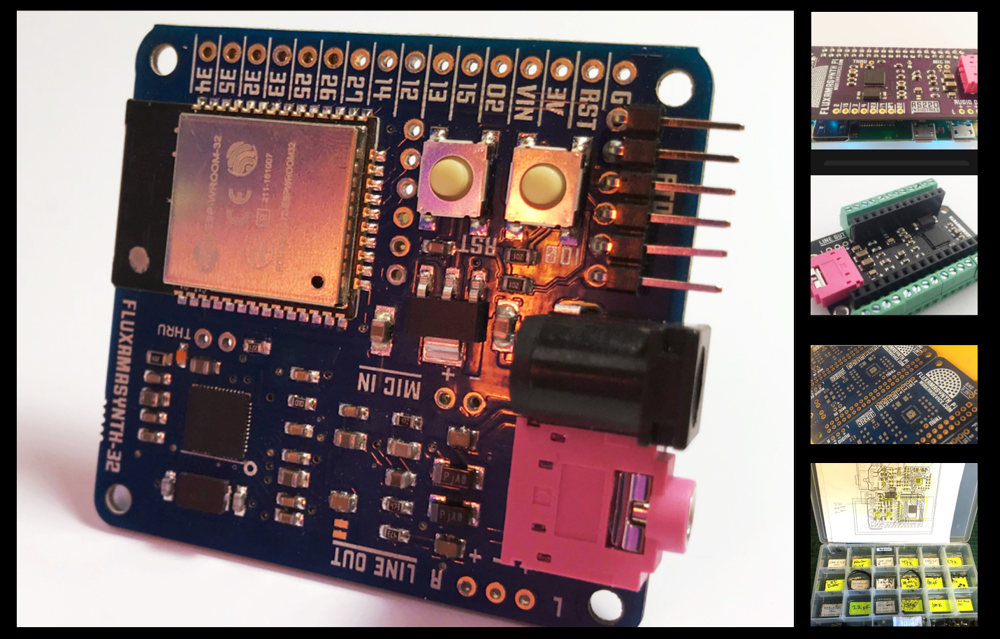

2018
Fluxamasynth Modules
The Fluxly Boombox was part of the Mockerspace/Fakerspace exhibit, ostensibly created by an industrial-sized version of the Mokrbot. The Boombox is dedicated to playing Fluxly.
Fluxamasynth on Hackaday
At Modern Device